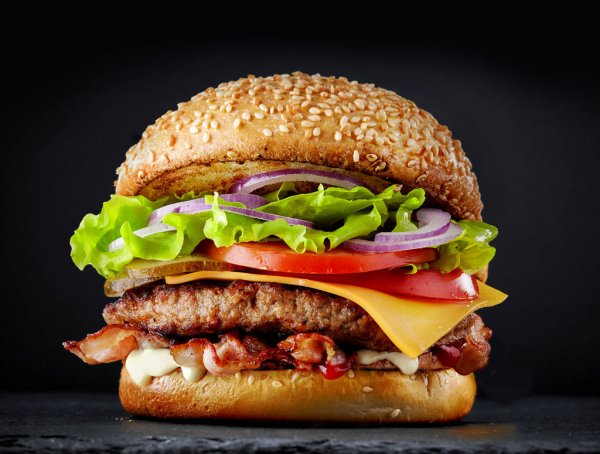

Burger

Description
Ingredients
2 pounds extra-lean ground beef
1 (1 ounce) package dry onion soup mix
2 teaspoons hot pepper sauce
2 teaspoons Worcestershire sauce
¼ teaspoon ground black pepper
Steps on how to make
Preheat an outdoor grill for medium high heat and lightly oil grate.
In a large bowl, combine the beef, onion soup mix, egg, hot sauce and oats and shape into 6 patties.
Grill patties over medium high heat for 10 to 20 minutes, or to desired doneness.
Homepage
Pie
Lasanga